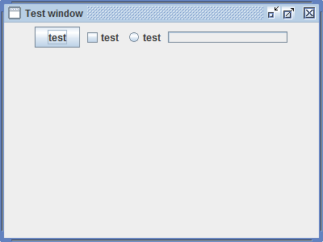

Java SE 6 Update 10 - GUI Enhancements
Java SE 6 Update 10 added a new
cross-platform Swing look & feel, code name
Nimbus,
provides a nice update over 'Metal' and 'Ocean' and with exciting
features. It also introduces a fully hardware accelerated
graphics
pipeline based on the Microsoft Direct3D 9 API, translating into
improved rendering of Swing applications which rely on translucency,
gradients, arbitrary transformations, and other more advanced 2D
operations.
Expected duration: 60 minutes
(excluding homework)
Resources
- Tutorials
- Swing sample codes
Change Log
- Nov. 15th, 2010: Created (Sang Shin)
Lab Exercises
Exercise 1: Run sample applications of
"Translucent" and "Shaped windows"
(1.1)
Open, build, and
run "javase6u10_SimpleWindow" sample application
In this step, you are going to build a
GUI without using
translucency.
1. Open "javase6u10_SimpleWindow"
project.
- Select File->Open Project (Ctrl+Shift+O). The Open Project dialog box appears.
- Browse down to <LAB_UNZIPPED_DIRECTORY>/javase6u10_gui/samples
directory.
- Windows: If you unzipped the 1514_javase6u10_gui.zip
file under C:\handson_javase_adv directory, the directory to which you
want
to browse down should be C:\handson_javase_adv\javase6u10_gui\samples.
- Solaris/Linux: If you unzipped the 1514_javase6u10_gui.zip
file under $HOME/handson_javase_adv directory under Windows, the
directory to
which you
want
to browse down should be $HOME/handson_javase_adv/javase6u10_gui/samples.
- Select javase6u10_SimpleWindow.
- Click Open Project.
2. Run the application.
- Right click project and select Run.
- Observe that a GUI gets displayed.

3. Study the code.
import java.awt.Dimension;
import java.awt.FlowLayout;
import javax.swing.*;
public class SimpleWindow extends JFrame {
public SimpleWindow() {
super("Test window");
this.setLayout(new FlowLayout());
this.add(new JButton("test"));
this.add(new JCheckBox("test"));
this.add(new
JRadioButton("test"));
this.add(new JProgressBar(0,
100));
this.setSize(new Dimension(400,
300));
this.setLocationRelativeTo(null);
this.setDefaultCloseOperation(JFrame.EXIT_ON_CLOSE);
}
public static void main(String[] args) {
JFrame.setDefaultLookAndFeelDecorated(true);
SwingUtilities.invokeLater(new
Runnable() {
@Override
public void
run() {
SimpleWindow w = new SimpleWindow();
w.setVisible(true);
}
});
}
}
|
return to top of
the exercise
(1.2)
Open, build, and
run "javase6u10_ShapedWindow" application
1. Open "javase6u10_ShapedWindow"
project.
- Select File->Open Project (Ctrl+Shift+O). The Open Project dialog box appears.
- Browse down to <LAB_UNZIPPED_DIRECTORY>/javase6u10_gui/samples
directory.
- Select javase6u10_ShapedWindow.
- Click Open Project.
2. Run the application.
- Right click project and select Run.
- Observe that a GUI gets displayed.
3. Study the code.
import java.awt.*;
import java.awt.geom.Ellipse2D;
import javax.swing.*;
public class ShapedWindow extends JFrame {
public ShapedWindow() {
super("Test oval-shaped window");
this.setLayout(new FlowLayout());
this.add(new JButton("test"));
this.add(new JCheckBox("test"));
this.add(new
JRadioButton("test"));
this.add(new JProgressBar(0,
100));
this.setSize(new Dimension(400,
300));
this.setLocationRelativeTo(null);
this.setDefaultCloseOperation(JFrame.EXIT_ON_CLOSE);
}
public static void main(String[] args) {
JFrame.setDefaultLookAndFeelDecorated(true);
SwingUtilities.invokeLater(new
Runnable() {
@Override
public void
run() {
Window w = new ShapedWindow();
w.setVisible(true);
com.sun.awt.AWTUtilities
.setWindowShape(w, new
Ellipse2D.Double(0, 0, w
.getWidth(), w.getHeight()));
}
});
}
}
|
return to top of
the exercise
(1.3)
Open, build, and
run "javase6u10_TranslucentWindow" application
1. Open "javase6u10_TranslucentWindow"
project.
- Select File->Open Project (Ctrl+Shift+O). The Open Project dialog box appears.
- Browse down to <LAB_UNZIPPED_DIRECTORY>/javase6u10_gui/samples
directory.
- Select javase6u10_TranslucentWindow.
- Click Open Project.
2. Run the application.
- Right click project and select Run.
- Observe that a GUI gets displayed.
3. Study the code
import java.awt.Dimension;
import java.awt.FlowLayout;
import javax.swing.*;
public class TranslucentWindow extends JFrame {
public TranslucentWindow() {
super("Test window");
this.setLayout(new FlowLayout());
this.add(new JButton("test"));
this.add(new JCheckBox("test"));
this.add(new
JRadioButton("test"));
this.add(new JProgressBar(0,
100));
this.setSize(new Dimension(400,
300));
this.setLocationRelativeTo(null);
this.setDefaultCloseOperation(JFrame.EXIT_ON_CLOSE);
}
public static void main(String[] args) {
JFrame.setDefaultLookAndFeelDecorated(true);
SwingUtilities.invokeLater(new
Runnable() {
@Override
public void
run() {
TranslucentWindow w = new TranslucentWindow();
w.setVisible(true);
com.sun.awt.AWTUtilities.setWindowOpacity(w,
0.5f);
}
});
}
}
|
return to top of
the exercise
(1.4)
Open, build, and
run "javase6u10_TranslucentShapedWindow" application
1. Open
"javase6u10_TranslucentShapedWindow" project.
- Select File->Open Project (Ctrl+Shift+O). The Open Project dialog box appears.
- Browse down to <LAB_UNZIPPED_DIRECTORY>/javase6u10_gui/samples
directory.
- Select javase6u10_TranslucentShapedWindow.
- Click Open Project.
2. Run the application.
- Right click project and select Run.
- Observe that a GUI gets displayed.
3. Study the code
import java.awt.*;
import java.awt.geom.Ellipse2D;
import javax.swing.*;
public class TranslucentShapedWindow extends JFrame {
public TranslucentShapedWindow() {
super("Test translucent and
oval-shaped window");
this.setLayout(new FlowLayout());
this.add(new JButton("test"));
this.add(new JCheckBox("test"));
this.add(new
JRadioButton("test"));
this.add(new JProgressBar(0,
100));
this.setSize(new Dimension(400,
300));
this.setLocationRelativeTo(null);
this.setDefaultCloseOperation(JFrame.EXIT_ON_CLOSE);
}
public static void main(String[] args) {
JFrame.setDefaultLookAndFeelDecorated(true);
SwingUtilities.invokeLater(new
Runnable() {
@Override
public void
run() {
Window w = new TranslucentShapedWindow();
w.setVisible(true);
com.sun.awt.AWTUtilities.setWindowOpacity(w,
0.5f);
com.sun.awt.AWTUtilities
.setWindowShape(w, new
Ellipse2D.Double(0, 0, w
.getWidth(), w.getHeight()));
}
});
}
}
|
return to top of
the exercise
return
to the top
Exercise 2: Explore "Laffy - Swing Look
and Feel sampler"
application
Exercise 3: Run Swing sample applications
of "Filthy Rich Swing" book
1. Using your browser, go to
Filthy Rich Clients book
source code
2. Download the chapter sample zip file.
3. Unzip the chapter sample zip file.
4. Open projects using NetBeans.
5. Set the correct Java platform for the project.
6. Run the application
return
to the top
Homework
Exercise
1. The homework exercise is to add
translucency and shaped window to the Anagram application that comes
with NetBeans IDE as a sample application.
2. Send the following files to
javase_adv_homework@javapassion.com
with
Subject as
javase6u10_gui.
- Zip file of the
MyOwnAnnotationExample
NetBeans project. (Someone else
should be able to open and run it as a NetBeans project.) You can
use your favorite zip utility or you can use "jar" utility that comes
with JDK as following.
- cd <parent directory that contains MyOwnAnnotationExample
directory>
(assuming you named your project as MyOwnAnnotationExample)
- jar cvf MyOwnAnnotationExample.zip MyOwnAnnotationExample
(MyOwnAnnotationExample directory
should
contain nbproject directory)
- Captured output screen -
name it as javase6u10_gui.gif
or javase6u10_gui.jpg (or javase6u10_gui.<whatever
graphics format>)
- Any screen capture that shows that your program is working is
good enough. No cosmetic polishment is required.
- If you decide to use
different IDE other than NetBeans, the zip
file should contain all the files that are needed for rebuilding the
project - war file with necessary source files is OK.